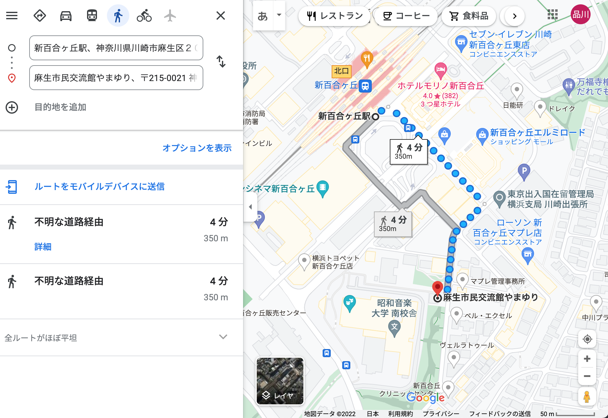
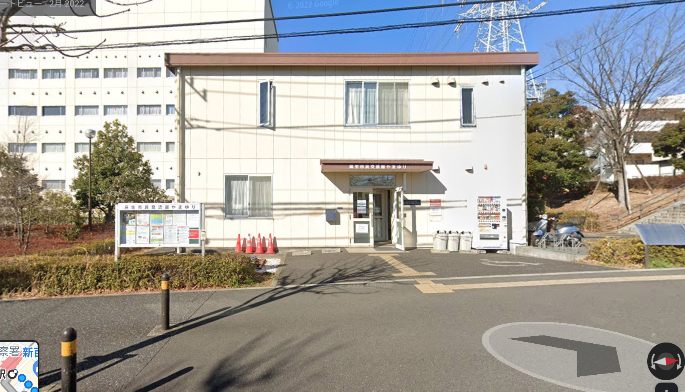

「〜第五回 平和を願い、実現するための集い〜」
に参加してみた。

駅から徒歩5分

https://www.google.com/maps/dir/%E6%96%B0%E7%99%B
E%E5%90%88%E3%83%B6%E4%B8%98%E9%A7%85%E3%80%81%E7%A5%9E%E5
%A5%88%E5%B7%9D%E7%9C%8C%E5%B7%9D%E5%B4%8E%E5%B8%82%E9%BA
%BB%E7%94%9F%E5%8C%BA%EF%BC%92%EF%BC%90/%E9%BA%BB%E7%94%
9F%E5%B8%82%E6%B0%91%E4%BA%A4%E6%B5%81%E9%A4%A8%E3%82%84%E3%
81%BE%E3%82%86%E3%82%8A%E3%80%81%E3%80%92215-0021+%E7%A5%9E%
E5%A5%88%E5%B7%9D%E7%9C%8C%E5%B7%9D%E5%B4%8E%E5%B8%82%E
9%BA%BB%E7%94%9F%E5%8C%BA%E4%B8%8A%E9%BA%BB%E7%94%9F%EF%BC%
91%E4%B8%81%E7%9B%AE%EF%BC%91%EF%BC%91%E2%88%92%EF%BC%95/@35.602
3782,139.5066471,17.25z/data=!4m14!4m13!1m5!1m1!1s0x6018fa41e022
9f23:0x45184f6c76efcb5a!2m2!1d139.5077543!2d35.60344!1m5!1m1!1s
0x6018fa6aba004a0b:0x27186d06c0c683fe!2m2!1d139.5086588!2d35.6013011!3e2
場所は新百合ヶ丘駅の南口を少し直進して右へ曲がり、少し歩いたところにあるクリーム色の建物だ。道幅を広く、経路は覚えやすいので初めていく道だったがすぐにその場所がわかった。

広島での被爆体験
記事の内容が入りmす
長崎での被爆体験
記事の内容が入ります
長崎での被爆体験
記事の内容が入ります
「あの夏の記憶」
記事の内容が入ります
「平和を願う会」
共同代表：森政 忠雄・萩坂 心一
https://rarea.events/event/160229
詳しくはこちらから
この記事の執筆者：早稲田大学二年 品川穂ノ風